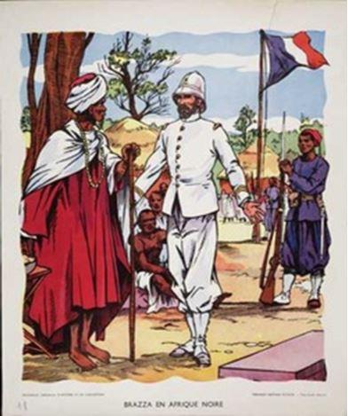
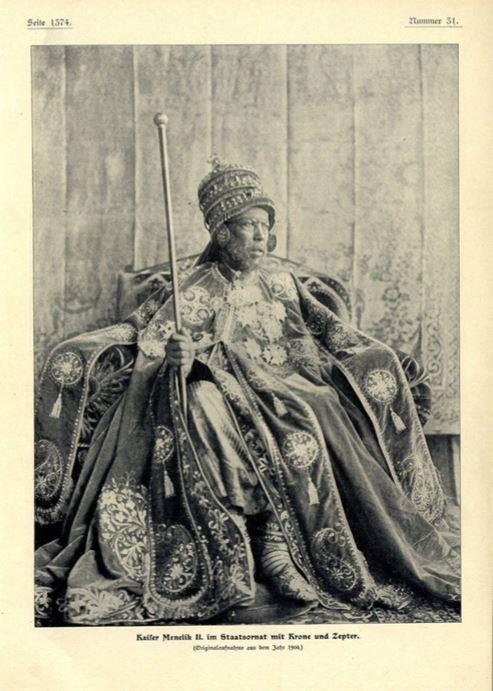
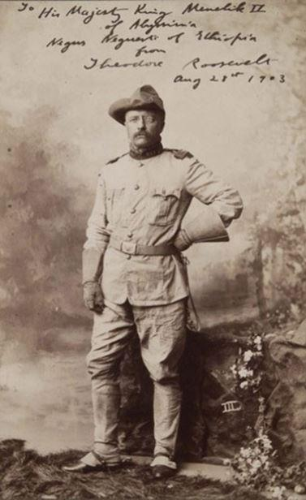
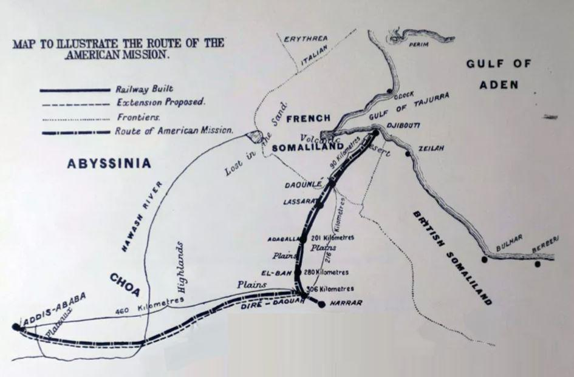
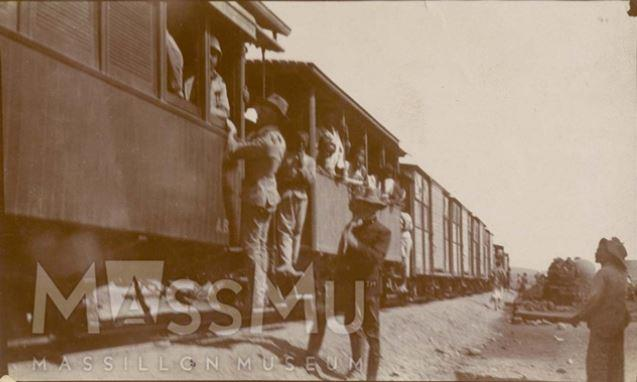
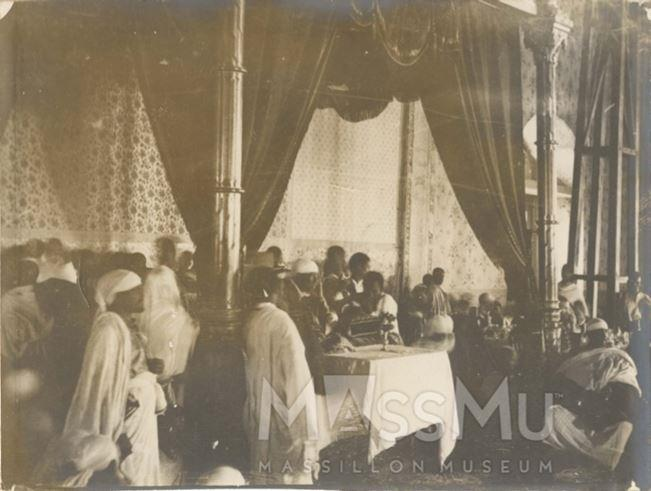
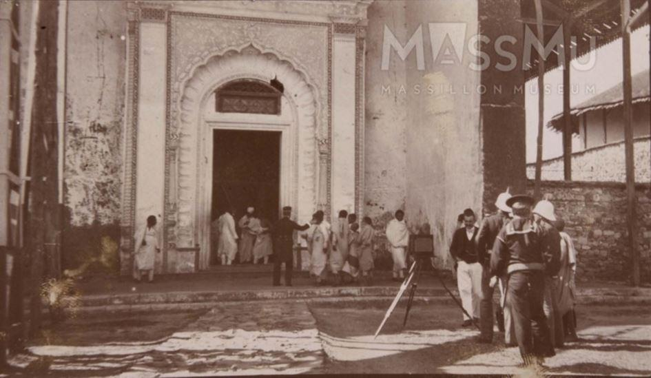
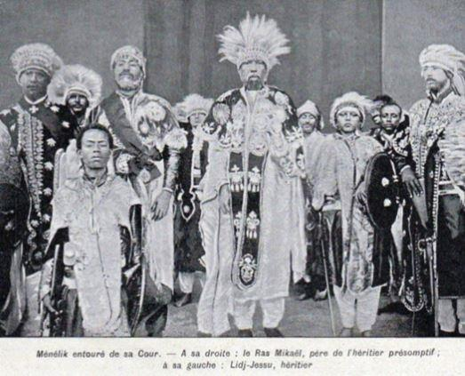

Des Américains à Djibouti, ça ne date pas d’aujourd’hui, la mission SKINNER en Éthiopie en 1903
par Patrick GUILLARD
Hugues FONTAINE, éminent et talentueux photographe, vagabondant en permanence dans la Corne de l’Afrique nous signale régulièrement sur son site : www.africaintrain.org, les événements concernant la Corne de l’Afrique. Événement d’actualité comme les avancées de la nouvelle ligne de chemin de fer ou plus ancien concernant la culture de la Corne de l’Afrique. Il y a quelques années, le musée américain : MASSILON MUSEUM (Ohio) a mis en ligne un ensemble de carnets de l’expédition américaine conduite par Skinner sur Addis-Abeba en 1903. Il m’est apparu opportun, à la suite de cette mise en ligne, de remettre en lumière le passage de cette mission par Djibouti en 1903.
Après la bataille d’Adoua en 1896 qui vit le triomphe des armées éthiopiennes sur celles de l’Italie, l’image de Ménélik sur le plan international s’en trouva radicalement modifiée et les puissances européennes réagirent rapidement afin de revoir leurs relations avec l’Éthiopie. Sa puissance dans la région n’était plus discutée et suivirent donc dix années de gloire, d’activité permanente et de progrès dans beaucoup de domaines.
Après Adoua, les missions diplomatiques se succédèrent officiellement, l’Italie d’abord, la France ensuite avec Lagarde comme ambassadeur plénipotentiaire, la Grande-Bretagne enfin en 1897 avec James Rood et de façon officieuse avec les Russes. Sur le plan international rappelons qu’en septembre 1898 à lieu le grave incident de Fachoda au Soudan entre la colonne française du colonel Marchand et l’anglaise de Lord Kitchener, incident qui mis à mal les relations franco-britanniques.
Aux missions diplomatiques s’adjoignirent ou succédèrent les missions commerciales. Washington avait fini par prêter une oreille curieuse à ce qu’on murmurait tout bas à Londres, Paris et Rome, sur ce lointain pays d’Afrique qui était, de surcroît, un client intéressant pour le commerce américain. En 1902, un voyageur qui revenait d’Éthiopie avait déclaré à l’officielle gazette du Caire Égyptien Gazette « La plus grande partie du commerce, en Éthiopie, est déjà passé entre les mains des Américains. Le principal article d’importation est le drap blanc de coton que tous les Ethiopiens portent, qui vient des Etats-Unis et qui est connu sous le nom d’americano ou merikani en amharique.
Les statistiques sont difficiles à établir car les exportations américaines et éthiopiennes en direction des Etats-Unis transitaient par des sociétés européennes implantées à Djibouti, Berbera et Aden. Pendant la période 1897-1898, L’historien Paul Henze prétend qu’un septième de tous les textiles importés par Djibouti consistait en merikani. En 1902 les États unis achetèrent pour 820.443US dollars de produits éthiopiens, cuir, café, ivoire et civette pour la parfumerie.
Le montant total du commerce éthiopien (importations et exportations) s’éleva à 2 316 000 dollars en 1902 et la part des américains dans ce montant était de 1 389 000 US dollars, soit 59 %.
En 1905-1906, le merikani représentait la moitié de toutes les importations enregistrées de cotonnade. Les exportations de peaux et de cuirs étaient également monopolisées par les Américains qui n’ayant, à l’époque, d’autres intérêts que commerciaux, étaient devenus le principal partenaire commercial du royaume abyssin.
En 1900 le consul américain à Marseille, Robert P. Skinner, écrivit au président Mac Kintley pour lui recommander d’établir des relations diplomatiques avec l’Éthiopie :
« …Afin de procurer des informations exactes aux exportateurs et aux fabricants américains… et plus particulièrement afin de sauvegarder l’important commerce existant qui s’est créé malgré l’indifférence américaine…sans la présence de citoyens américains »
Ce n’est que trois ans plus tard que Washington se décida à suivre l’avis de Skinner. À l’été 1903, mandaté par le nouveau président, Théodore Roosevelt, grand chasseur de trophées dans les savanes africaines, Skinner se rend donc en Éthiopie pour négocier avec l’empereur Ménélik un traité commercial et inviter l’Éthiopie à participer à l’exposition de Saint-Louis « The Louisiana Purchase Exhibition » invitation que l’empereur déclina.
Skinner et sa délégation composée de Horatio Watson Wales, son secrétaire, Abraham Per Lee Pease, son chirurgien, et deux autres personnes quittèrent New-York le 8 octobre 1903 pour rejoindre à Naples le navire de guerre U.S.S. Machias (photos) qui fit route vers Beyrouth où embarquèrent 19 hommes de troupes et 6 marins soit une délégation de 30 personnes.
Ils passèrent en mer Rouge pour arriver à Djibouti le 17 novembre 1903. Tout au long de sa mission Skinner fit preuve d’un mélange d’humour, de capacité d’observation et d’attachement aux objectifs commerciaux. En voici un exemple : lors de son passage à Djibouti, il fit un commentaire sur les enfants somalis dont la nudité ne lui paraissait pas encourageante « quand on souhaite trouver des débouchés pour les tissus américains. »
Mais malgré ces remarques qui peuvent nous sembler de nos jours un peu tendancieuses, Skinner, consul, en savait beaucoup en arrivant à Djibouti. Pour lui, Djibouti était la clé du futur commercial de l’Éthiopie, car avec l’achèvement de la première section du chemin de fer franco-éthiopien jusqu’à Diré-Daoua, survenu quelques mois avant, le port devenait un important lieu de transit pour le commerce éthiopien. Jusqu’alors, le commerce en général et le commerce américain en particulier, avait atteint Aden et de là, avait traversé vers les ports de la mer Rouge où des chameaux prenaient le relais pour un lent cheminement vers l’intérieur. Le chemin de fer qui venait de s’établir dans notre région signifiait en effet une évolution et une révolution dont les Américains avaient décidé d’être parti prenante.
Skinner et la délégation voyagèrent en train de Djibouti à Diré-Daoua et firent un crochet par Harar pour saluer le Ras Makonnen qui mit son nouveau palais de style arabo-indien à leur disposition et fit apporter des jarres « de champagne indigène » (du tegj).

Train franco-djiboutien (1903), archives of the Massillon Museum
Les Américains burent à la santé du président Roosevelt et de l’empereur Ménélik. À leur retour à Diré-Daoua, il y eut des délais pour organiser le départ d’une caravane vers Addis-Abeba. Le Ras Makonnen reçut à plusieurs reprises Skinner qui lui offrit un portrait du président américain. Les deux hommes lièrent spontanément des profonds liens d’amitié et Skinner dans sa correspondance semble réellement éprouvé par la mort de Makonnen au printemps 1906 alors que le nouveau président Théodore Roosevelt déclarait « Mac Onen ? un écossais je présume ! »
En chemin, le groupe connut quelques aventures en rencontrant des Afars hostiles. Trois semaines de voyage furent nécessaires pour couvrir 442 kilomètres et la délégation arriva à la périphérie d’Addis le 18 décembre, accueillie par un groupe de notables. À sa tête se trouvait un Français, Leon Chefneux, devenu le conseiller de Ménélik pour les affaires étrangères. À l’entrée de la capitale une escorte de 3000 hommes accompagna les visiteurs jusqu’au palais de Ménélik (photos) qui les reçut aussitôt en présence d’une grande foule.
Skinner offrit une statue en bronze de George Washington. « Comme nous quittions l’Aderash (grand salle de réception du palais impérial)… vingt et un coups de canon furent tirés et une fanfare locale équipée en instruments par un agent politique russe, le comte Leontieff, joua Hail Colombia et La Marseillaise.*
La mission Skinner ne resta que neuf jours à Addis-Abeba, mais elle apprit beaucoup de choses sur l’empire de Ménélik. L’empereur était alors à son apogée. Skinner fut impressionné par sa curiosité pour tout ce qui était moderne, par son évaluation précise de la complexité de la politique internationale et par son habileté à faire appel à des conseillers étrangers et indigènes. Il constata que Chefneux et Ilg, tous deux présents depuis longtemps en Éthiopie, étaient des personnages clés du régime.
Toujours tourné vers le futur, Skinner espérait que l’achèvement du chemin de fer vers Addis provoquerait une accélération du développement et donnerait un coup de fouet au commerce. Anticipant sur les fournées d’étudiants qui viendraient étudier aux États Unis un demi-siècle plus tard, Skinner suggéra, en 1903, à Ménélik l’envoi de jeunes Ethiopiens dans les écoles et universités américaines. « Oui, on y viendra » répondit Ménélik en laissant ainsi à Haylé Sellassie le soin d’initier le mouvement.
Le traité visant à réguler les relations commerciales entre les États Unis et le roi d’Éthiopie, négocié par Skinner, fut signé officiellement et le sceau de Ménélik y fut apposé le dernier jour de la mission dans la capitale, le 27 décembre 1903. Sa durée était de dix ans. Transmis par le Président des États Unis le 2 mars 1904 au Sénat, il fut ratifié le 12 mars 1904. Il resta en vigueur jusqu’en 1914 quand il fut re mplacé par un deuxième traité signé à Addis-Abeba le 27 juin 1914.
En cadeau d’adieu, Ménélik remit à Skinner une paire de défenses d’éléphant de 2,4 mètres puis deux jeunes lions destinés au président Roosevelt. L’un mourut sur la route de Diré-Daoua, l’autre arriva finalement à Washington et fut placé au zoo national.
Chaque membre de la délégation fut décoré. Skinner estima que sa mission avait été un grand succès. Dans son rapport final il indique :
« Dans l’histoire moderne de l’Éthiopie, probablement pour la première fois, une délégation étrangère est venue dans le pays pour une mission de paix et d’amitié, n’ayant aucun problème épineux d’intégrité territoriale ou d‘honneur national à résoudre, et ne demandant ou n’accordant rien qui ne soit acceptable par les deux parties ». Comme il est dommage que les règles de la politique internationale de cette époque, si tel était le cas, est été oublié.
Finalement, le grand espoir de Skinner de voir le commerce américain avec l’Éthiopie s’accroître régulièrement ne se matérialisa pas, mais resta à un niveau modeste. En effet, il faut bien dire que le gouvernement des États Unis ne fit pas grand-chose pour promouvoir le commerce et rien pour encourager d’autres formes de relations, même si un consul ou un vice-consul fut en poste à Addis-Abeba entre 1906 et 1913 date de la mort de Ménélik. Par la suite, les intérêts américains furent représentés par la légation britannique.
Suite au passage de cette mission, réussit à s’implanter la célèbre en Afrique compagnie des machines à coudre Singer qui créa une succursale à Addis en 1909 et recruta des représentants dans les villes de province. Si un citoyen noir américain, William Henry Ellis, un planteur de coton du sud des États Unis, avait en 1899 obtenu avant le passage de la mission, une concession de Ménélik afin de créer une plantation de coton qui avait connu un certain développement, quelques Noirs après la mission vinrent au début du siècle, mais la plupart échouèrent dans leurs entreprises car leurs attentes n’étaient pas réalistes et parce qu’il leur était difficile de s’adapter au milieu culturel propre à l’Éthiopie.
Trente-deux ans plus tard, à Ankara, où il terminait en qualité d’ambassadeur des États Unis sa carrière diplomatique, l’honnête Skinner, un grand vieillard, au visage sec et ridé, évoquait les larmes aux yeux, ces souvenirs éthiopiens. Il avait eu avec le Ras Makonnen des relations amicales très fortes. En pensant à son fils, l’empereur Haylé Sélassié, qui se préparait à résister aux légions fascistes de Mussolini, il déclara à un journaliste en 1935 : « Ce Makonnen, était un lion, or, un lion ne peut engendrer qu’un autre lion ». La suite de l’histoire vous la connaissez.
Dr. P.G.
Bibliographie succincte
S. Pierre Petrides, Le Héros d’Adoua, Ras Makonnen, prince d’Ethiopie. Plon,1963.
Paul B. Henze, Histoire de l’Ethiopie, l’œuvre du temps, Les nouvelles d’Addis, Moulin du pont, 2004.
Henry De Monfreid, Vers les terres hostiles de l’Ethiopie, Grasset, 1933.
Evelyn Waugh, Waugh en Abyssinie, Arléa, 1989.
Roberts P. Skinner, Abyssinia of today 1906, London: E. Arnold. New-York: Longmans Green.
Per Lee Pease, Winter Wanderings, Cochrane Publishing Campagne, 1910.
EN LIGNE : le site d’Hugues Fontaine : www.africaintrain.org
Partager cette page